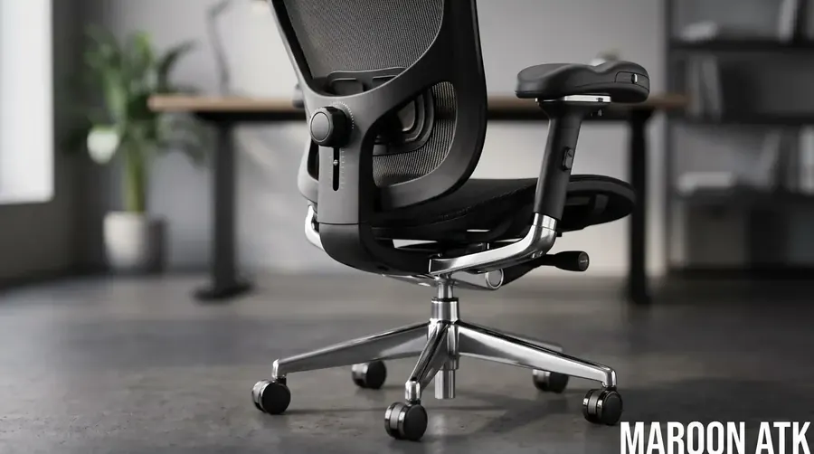
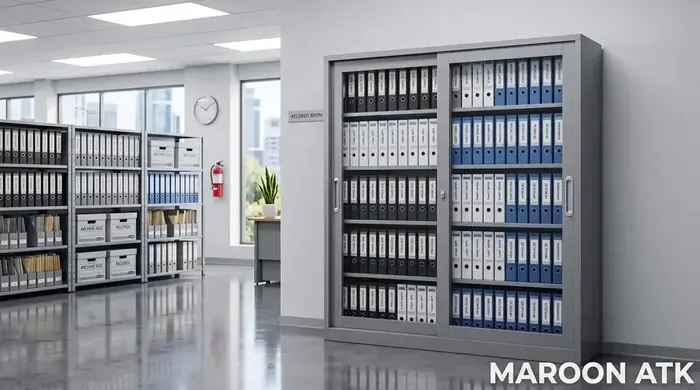

Pentingnya SOP Pengadaan Furniture Kantor B2B bagi Perusahaan
Standard Operating Procedure pengadaan furniture kantor B2B adalah kerangka kerja sistematis untuk memandu tim Purchasing & General Affairs dalam mengesekusi pembelian sarana kerja korporasi secara akuntabel. SOP ini menetapkan metode penyusunan Term of Reference (TOR), tahapan audit legalitas vendor berbadan hukum PT, uji fisik material, serta tata cara mitigasi risiko sengketa garansi dan klaim pajak PPN 11%.
Proses belanja sarana dan prasarana kantor dalam skala korporat maupun instansi pemerintah menuntut ketelitian tingkat tinggi. Kegagalan dalam merumuskan pengadaan furniture kantor yang terstruktur sering kali berujung pada kerugian finansial—mulai dari barang yang cepat rusak, ketidaksesuaian ergonomi kerja, hingga kendala kelengkapan e-Faktur saat audit perpajakan.
Melalui artikel ini, tim pakar dari Tentang Kami Maroon ATK membagikan panduan praktis Standard Operating Procedure (SOP) pengadaan barang yang teruji di lapangan untuk mendukung kinerja divisi Purchasing, Procurement Manager, serta GA Sarpras di seluruh Indonesia.

Berapa Harga Videotron LED Indoor per m2 Terpasang di Jakarta?
Panduan perkiraan biaya instalasi videotron LED indoor untuk ruang rapat eksekutif dan auditorium.
Tahapan Utama SOP Pengadaan Furniture Kantor Skala Korporasi
Proses pengadaan B2B yang profesional wajib dibagi ke dalam empat fase utama agar setiap Rupiah yang diinvestasikan memberikan imbal hasil efisiensi operasional secara optimal:
Fase 1: Analisis Kebutuhan & Penyusunan TOR/Spesifikasi Teknis
Langkah awal dimulai dari inventarisasi beban kerja karyawan. Divisi Purchasing tidak boleh sekadar membeli unit berdasarkan desain visual, melainkan harus mengacu pada spesifikasi ergonomi dan ketahanan fisik material:
- Kursi Kerja Staf & Eksekutif: Kursi premium untuk staf dan eksekutif ini harus dibekali tiga pilar utama kenyamanan: bantalan penahan postur pinggang yang aktif, tabung gas hidrolik tersertifikasi BIFMA demi jaminan keselamatan, serta fleksibilitas lengan 3D yang bisa disesuaikan dengan gerak alami tubuh pengguna.
- Meja Kerja Modular: Menggunakan bahan Particle Board/MDF ketebalan minimal 25mm dengan permukaan *melamine laminate* anti-gores dan fitur *cable management grommet*.
- Lemari Arsip Berkas: Menggunakan material plat baja kalt rolled steel (ketebalan 0.6mm - 0.8mm) dengan sistem finishing *powder coating* rust-proof.
Fase 2: Seleksi Vendor, Audit Legalitas, & Evaluasi SPH
Sebelum menerbitkan Surat Penawaran Harga (SPH), tim Procurement wajib melakukan verifikasi legalitas terhadap calon supplier. Vendor B2B yang bonafide harus berbentuk entitas Perseroan Terbatas (PT) yang terdaftar di Kemenkumham, memiliki Surat Pengukuhan Pengusaha Kena Pajak (SPPKP), serta bersedia menerbitkan e-Faktur PPN yang valid.

Pengujian fisik sampel kursi kantor ergonomis oleh tim teknis untuk memverifikasi kualitas hidrolik BIFMA dan material mesh sebelum PO diterbitkan.
Fase 3: Uji Sampel (Sample Testing) & Kunjungan Showroom
Jangan pernah melakukan pembelian skema bulk-order tanpa memeriksa fisik barang. Pintalah unit demo sampel atau lakukan kunjungan gudang/showroom. Di Maroon ATK (maroonatk.web.id), kami memfasilitasi tim penilai barang untuk menguji coba stabilitas meja, kehalusan rel laci lemari arsip, hingga tingkat kenyamanan busa *molded foam* pada kursi kerja.

Pengadaan Interactive Flat Panel Sekolah: Transformasi Smart Classroom
Panduan pengadaan papan tulis digital interaktif untuk sekolah dan institusi pendidikan modern.
Matriks SOP Pengadaan Furniture Kantor B2B
Berikut adalah tabel panduan kerja yang dapat diadopsi oleh tim Purchasing dalam menyusun dokumen kontrol operasional:
| Tahapan SOP | Dokumen yang Dibutuhkan | Tanggung Jawab Purchasing | Poin Kritis Kelayakan Vendor |
|---|---|---|---|
| 1. Identifikasi & TOR | Form Permintaan Barang (FPB), Spesifikasi Teknis (TOR) | Merumuskan dimensi, ergonomi, & estimasi anggaran RAB. | Kesesuaian fungsi dengan beban kerja operasional staf. |
| 2. Tender & SPH | SPH berkatalog, legalitas usaha (SIUP/NIB), dan NPWP. | Benchmarking harga & komparasi minimal 3 vendor. | Kelengkapan e-Faktur PPN 11% & legalitas perseroan (PT). |
| 3. Proofing & Sampling | Berita Acara Uji Sampel (BAUS), Sample Unit Agreement | Menguji ketahanan material hidrolik, rangka baja, & kenyamanan. | Adanya garansi resmi distributor dan komponen pengganti. |
| 4. Penerbitan PO & BAST | PO resmi, legalisasi kontrak, dan BAST. | Pengawasan proses kirim, instalasi perakitan, & QC akhir. | Ketersediaan tim teknisi instalasi internal di lokasi pengiriman. |

Pengadaan lemari arsip plat baja pintu sliding kaca untuk pengamanan dokumen fisik instansi dengan standar ketahanan jangka panjang.

Panduan Memilih Supplier ATK Kantor Jakarta Terpercaya Berlegalitas
Kriteria wajib memilih supplier ATK kantor resmi dengan legalitas PT, status PKP, dan e-Faktur PPN 11% yang sah.
Keunggulan Maroon ATK sebagai Mitra Pengadaan Furniture B2B
Sebagai penyedia sarana kantor yang berpengalaman melayani puluhan instansi pemerintah, BUMN, dan korporasi swasta, Maroon ATK memberikan kepastian layanan pengadaan komprehensif:
- Entitas Legalitias Transparan: Didukung PT resmi, siap menerbitkan e-Faktur PPN 11%, dan SPH bersurat resmi untuk kebutuhan e-procurement.
- Tim Teknisi Instalasi Internal: Pengiriman dan perakitan tidak menggunakan kurir pihak ketiga yang tidak terlatih, melainkan ditangani langsung oleh staf armada teknis kami.
- Garansi Purna Jual Pasti: Jaminan garansi hingga 3 tahun untuk sparepart hidrolik dan mekanisme kursi serta struktur meja besi.
Butuh SPH Resmi Pengadaan Furniture Kantor?
Konsultasi teknis gratis
Dapatkan konsul teknis gratis, penyusunan RAB, dan pengiriman sampel fisik langsung dari tim ahli Maroon ATK.
Kesimpulan: Menerapkan SOP untuk Efisiensi Pengadaan Furniture Kantor
Poin Kunci SOP Pengadaan Furniture Kantor B2B
Penerapan SOP pengadaan furniture kantor B2B yang ketat merupakan kunci utama dalam mengamankan aset perusahaan, menjaga keselamatan ergonomi kerja karyawan, serta menjamin kelancaran audit akuntansi internal.
- Spesifikasi Jelas: Utamakan ketahanan material seperti sertifikasi BIFMA dan plat baja ketebalan presisi.
- Legalitas Vendor: Pastikan supplier memiliki NPWP, PKP, serta mampu menerbitkan e-Faktur PPN tanpa kendala.
- Jaminan Garansi: Pilih mitra penyedia yang memiliki tim instalasi internal dan layanan purna jual resmi seperti Maroon ATK.
Pertanyaan Umum (FAQ) SOP Pengadaan Furniture
Vendor wajib menyediakan legalitas PT/CV resmi, NPWP Perusahaan, Surat Pengukuhan Pengusaha Kena Pajak (SPPKP), e-Faktur PPN 11% yang sah, SPH resmi bersurat kop perusahaan, serta Berita Acara Serah Terima (BAST).
Ya, Maroon ATK menyediakan fasilitas unit demo fisik untuk kursi ergonomis dan meja kantor serta kunjungan showroom/gudang langsung agar tim procurement dapat melakukan audit kualitas sebelum penerbitan Purchase Order (PO).
Setiap pengadaan furniture kantor di Maroon ATK dilindungi garansi resmi distributor hingga 1-3 tahun mencakup struktur hidrolik, rangka baja, dan mekanisme roda, didukung oleh tim teknisi instalasi internal di lokasi.

Arby Ardiansyah
Praktisi pengadaan B2B berpengalaman lebih dari 5 tahun dalam manajemen rantai pasok sarana kantor, spesifikasi ergonomi furniture, dan e-procurement instansi pemerintah dan swasta di Indonesia.